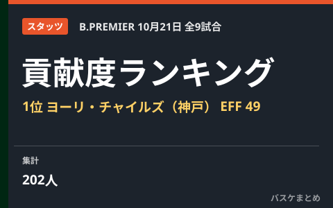

10月21日の貢献度ランキング 1位はヨーリ・チャイルズ（神戸）の49

10月21日に行われたりそなB.LEAGUE PREMIER(Bプレミア)9試合のボックススコアから、貢献度（EFF）の上位選手をまとめました。この日の貢献度1位は神戸のヨーリ・チャイルズで、27得点・15リバウンド・8アシストを記録し、貢献度49をマークしました。
貢献度 TOP3
- 1位ヨーリ・チャイルズ神戸EFF 49
- 2位ジェイデン・リディ川崎EFF 48
- 3位ジョシュ・ホーキンソン東京SREFF 42
貢献度ランキング TOP10
| 順位 | 選手・所属 | EFF | 得点 | REB | AST | STL | BLK | 出場分 |
|---|---|---|---|---|---|---|---|---|
| 1 | ヨーリ・チャイルズ神戸 | 49 | 27 | 15 | 8 | 3 | 0 | 38 |
| 2 | ジェイデン・リディ川崎 | 48 | 30 | 12 | 1 | 1 | 0 | 22 |
| 3 | ジョシュ・ホーキンソン東京SR | 42 | 31 | 10 | 2 | 0 | 0 | 32 |
| 4 | ドウェイン・エバンス広島 | 38 | 22 | 16 | 6 | 1 | 0 | 28 |
| 5 | ブライアン・アンゴラ富山 | 34 | 28 | 6 | 5 | 3 | 0 | 35 |
| 6 | スコット・エサトン名古屋D | 34 | 22 | 13 | 1 | 1 | 0 | 27 |
| 7 | マーク・スミス秋田 | 32 | 27 | 8 | 6 | 0 | 2 | 32 |
| 8 | アミール・シムズ富山 | 32 | 26 | 7 | 6 | 1 | 2 | 31 |
| 9 | デレク・パードンA千葉 | 32 | 18 | 10 | 6 | 2 | 1 | 29 |
| 10 | アンジェロ・カロイアロ京都 | 32 | 17 | 8 | 7 | 2 | 1 | 27 |
EFF＝貢献度、REB＝リバウンド、AST＝アシスト、STL＝スティール、BLK＝ブロック、出場分＝出場時間（分）。
国籍別ランキングは未掲載です。公式国籍情報を確認できない選手を名前から分類しません。
部門別リーダー
| 部門 | 1人目 | 2人目 | 3人目 |
|---|---|---|---|
| 得点 | ジョシュ・ホーキンソン東京SR31 | ジェイデン・リディ川崎30 | ブライアン・アンゴラ富山28 |
| リバウンド | ドウェイン・エバンス広島16 | コフィ・コーバーン広島16 | ヨーリ・チャイルズ神戸15 |
| アシスト | ヨーリ・チャイルズ神戸8 | 米須 玲音川崎8 | ジェイムズ・パルマージュニア大阪8 |
| スティール | ヤニー・ウェッツェル秋田4 | ソン ギョチャン大阪4 | ヨーリ・チャイルズ神戸3 |
| ブロック | パブロ・アギラール長崎3 | マーク・スミス秋田2 | アミール・シムズ富山2 |
この日の試合結果
| ホーム | スコア | アウェー |
|---|---|---|
| 北海道 | 87－105 | 富山 |
| 宇都宮 | 69－98 | 名古屋D |
| 千葉J | 79－102 | 京都 |
| 川崎 | 101－67 | 大阪 |
| 信州 | 90－97 | 東京SR |
| 滋賀 | 92－80 | 神戸 |
| 広島 | 98－84 | 秋田 |
| 佐賀 | 66－84 | 長崎 |
| 琉球 | 94－65 | A千葉 |
Q. 貢献度（EFF）とは？
A. 得点・リバウンド・アシスト・スティール・ブロック・被ファウルを加算し、外したシュート数（フィールドゴール・フリースロー）、ターンオーバー・被ブロック・ファウルを減算した指標です。B.LEAGUE公式記録の値をそのまま掲載しています。公式用語集を参照してください。
出典：B.LEAGUE公式 試合詳細（ボックススコア）
https://www.bleague.jp/game_detail/?ScheduleKey=506486
https://www.bleague.jp/game_detail/?ScheduleKey=506487
https://www.bleague.jp/game_detail/?ScheduleKey=506488
https://www.bleague.jp/game_detail/?ScheduleKey=506489
https://www.bleague.jp/game_detail/?ScheduleKey=506490
https://www.bleague.jp/game_detail/?ScheduleKey=506491
https://www.bleague.jp/game_detail/?ScheduleKey=506492
https://www.bleague.jp/game_detail/?ScheduleKey=506493
https://www.bleague.jp/game_detail/?ScheduleKey=506494